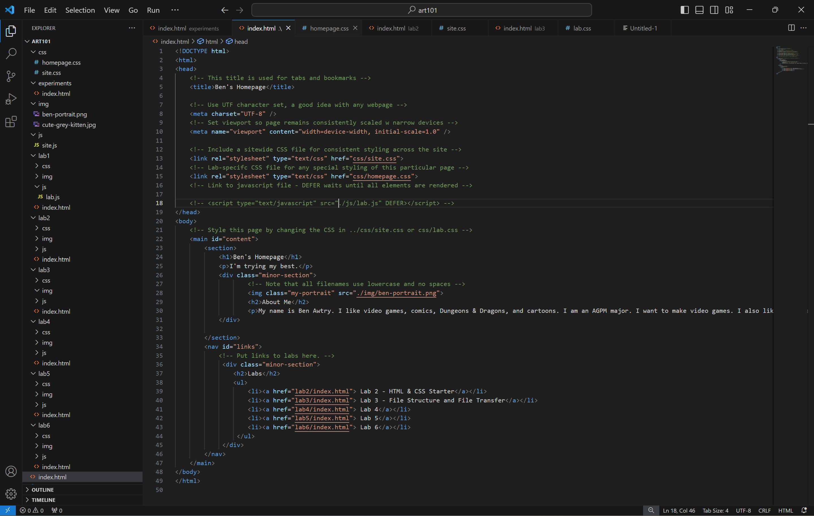

Lab 3 - File Structures and File Transfer
This lab was meant for us to undertsand the file structure and organize the ones on our computers as well as practicing transferring files into the file structure and incorporating them into the code.
Challenge
The way the file structure works was fairly easy to understand, especially since we've had two other labs to get used to it and had a lecture about file structures. We were having some trouble figuring out how to properly add images to the file structure and them coding them so they show up on the website until the lecture, though. My partner had some troubles with linking their Lab 3 page to their home page.
Problems
My file explorer cannot show the full file structure at once, so I showed the full structure in VS Code. I also had to figure out how to get everything where it needed to be. Communicating with Ronie also helped me troubleshoot any problems I was having.
Reflection
This lab was very helpful in teaching us about file structures and how to trasnfer in files to use. It was expecially informative on how to insert images.
Results
I worked with my partner to make this html file. Here are pictures of my file structure.
File Structure
Home Page HTML and Site
Lab 3 Page HTML and Site